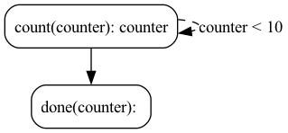

Simple Example#
This simple example is just to learn the basics of the library. The application we’re building is not particularly interesting, but it will get you powerful. If you want to skip ahead to the cool stuff (chatbots, ML training, simulations, etc…) feel free to jump into the deep end and start with the examples.
We will go over enough of the concepts to help you understand the code, but there is a much more in-depth set of explanations in the concepts section.
🤔 For an alternative example to get started with, you can also check out this video walkthrough using this notebook.
Build a Counter#
We’re going to build a counter application. This counter will count to 10 and then stop.
Let’s start by defining some actions, the building-block of Burr. You can think of actions as a function that computes a result and modifies state. They declare what they read and write.
Let’s define two actions: 1. A counter action that increments the counter 2. A printer action that prints the counter
@action(reads=["counter"], writes=["counter"])
def count(state: State) -> Tuple[dict, State]:
current = state["counter"] + 1
result = {"counter": current}
print("counted to ", current)
return result, state.update(**result) # return both the intermediate
@action(reads=["counter"], writes=[])
def done(state: State) -> Tuple[dict, State]:
print("Bob's your uncle")
return {}, state
This is an action that reads the “counter” from the state, increments it by 1, and then writes the new value back to the state.
It returns both the intermediate result (result) and the updated state.
Next, let’s put together our application. To do this, we’ll use an ApplicationBuilder
from burr.core import ApplicationBuilder, default, expr
app = (
ApplicationBuilder()
.with_state(counter=0) # initialize the count to zero
.with_actions(
count=count, # add the counter action with the name "counter"
done=done # add the printer action with the name "printer"
).with_transitions(
("count", "count", expr("counter < 10")), # Keep counting if the counter is less than 10
("count", "done", default) # Otherwise, we're done
).with_entrypoint("count") # we have to start somewhere
.with_tracker(project="my_first_app")
.build()
)
We can visualize the application (note you need burr[graphviz] installed):
app.visualize("./graph", format="png", include_conditions=True, include_state=True)

As you can see, we have:
The action
countthat reads and writes thecounterstate fieldThe action
donethat reads thecounterstate fieldA transition from
counttocountifcounter < 10A transition from
counttodoneotherwise
Finally, we can run the application:
app.run(halt_after=["printer"])
If you want to copy/paste, you can open up the following code block and add to a file called run.py:
run.py
from typing import Tuple
from burr.core import (
action,
State,
ApplicationBuilder,
default,
expr
)
@action(reads=["counter"], writes=["counter"])
def count(state: State) -> Tuple[dict, State]:
current = state["counter"] + 1
result = {"counter": current}
print("counted to ", current)
return result, state.update(**result) # return both the intermediate
@action(reads=["counter"], writes=[])
def done(state: State) -> Tuple[dict, State]:
print("Bob's your uncle")
return {}, state
if __name__ == '__main__':
app = (
ApplicationBuilder()
.with_state(counter=0) # initialize the count to zero
.with_actions(
count=count, # add the counter action with the name "counter"
done=done # add the printer action with the name "printer"
).with_transitions(
("count", "count", expr("counter < 10")), # Keep counting if the counter is less than 10
("count", "done", default) # Otherwise, we're done
).with_entrypoint("count") # we have to start somewhere
.with_tracker(project="my_first_app")
.build()
)
app.visualize("./graph", format="png", include_conditions=True, include_state=True)
app.run(halt_after=["done"])
And the output looks exactly as we expect!
$ python run.py
counted to 1
counted to 2
counted to 3
counted to 4
counted to 5
counted to 6
counted to 7
counted to 8
counted to 9
counted to 10
Bob's your uncle
Finally, let’s open up the UI and see what it looks like (note, that if you have not installed burr[learn] now is a good time…).
burr
You’ll see the UI pop up with projects. Navigate to the UI and explore!
All this to increment? Well, if all you want to do is count to 10, this might not be for you. But we imagine most of you want to do more exciting things than count to 10…